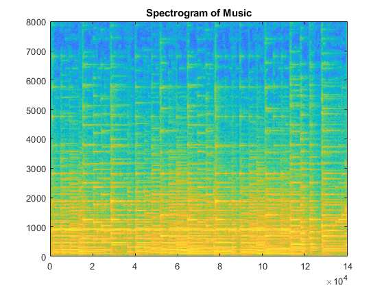
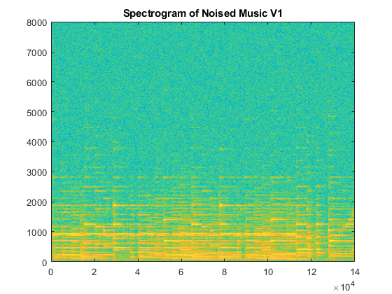
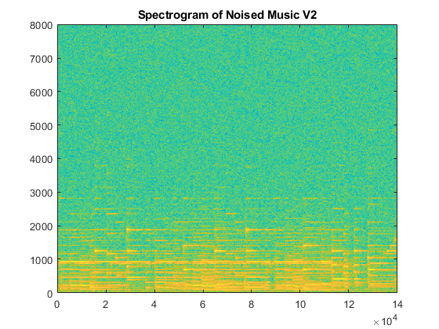
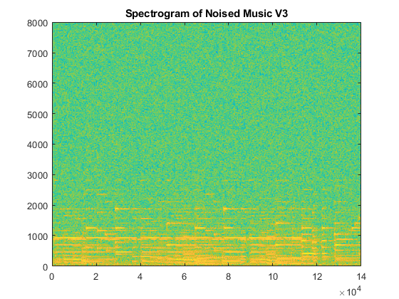
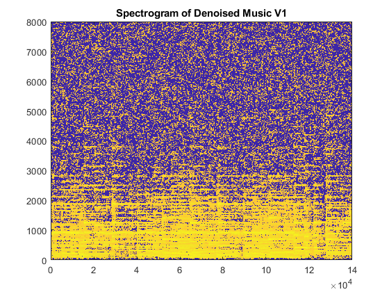
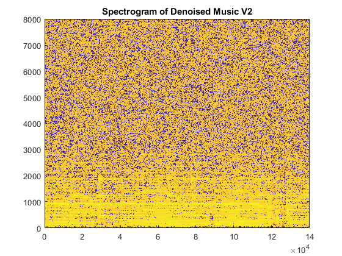
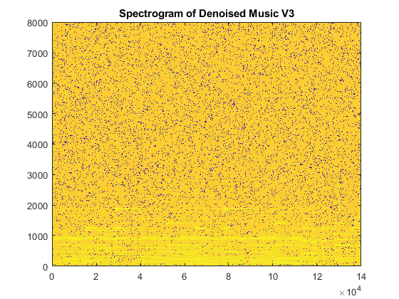

Contents
Creation of the noisy versions of the music
close all; [noise1,Fs1] = audioread("noise1.wav"); [noise2,Fs2] = audioread("noise2.wav"); [noise3,Fs3] = audioread("noise3.wav"); [music,Fs] = audioread("music.wav"); %For each song adding some noise which is a combination of the three noises %and display the SNR overall_noise_1 = 0.05 * (noise1 + noise2 + noise3); overall_noise_2 = 0.1 * (noise1 + noise2 + noise3); overall_noise_3 = 0.2 * (noise1 + noise2 + noise3); noised_music_1 = music + overall_noise_1; disp('SNR of noised_music_1' ) disp(snr(music, overall_noise_1)) noised_music_2 = music + overall_noise_2; disp("SNR of noised_music_2" ) disp(snr(music, overall_noise_2)) noised_music_3 = music + overall_noise_3; disp("SNR of noised_music_3" ) disp(snr(music, overall_noise_3))
SNR of noised_music_1
18.7865
SNR of noised_music_2
12.7659
SNR of noised_music_3
6.7453
To recap in this part we had just created three new noisy signals with different SNR
Spectogram
In this part we computed the histogram using the library ltfat, that provides an efficient way to compute the spectrogram. The parameters of the spectrogram are "standards" one. They tend to equal temporal and frequency informations.
window_size = 1024;
recouvering = window_size/4;
T = length(music);
g = gabwin({'tight', 'hann'}, recouvering, window_size);
%Pointeur matlab (pour éviter de réécrire à chaque fois)
op.analysis = @(x) dgtreal(x,g,recouvering,window_size);
op.synthesis = @(x) idgtreal(x,g,recouvering,window_size,T);
%Performing the Analysis on Original Music
X = op.analysis(music);
[NbFreq, NbTime] = size(X);
FreqGaborAxis = linspace(0,Fs/2,NbFreq);
TimeGaborAxis = linspace(0,T,NbTime);
%Plotting the result
figure;
imagesc(TimeGaborAxis, FreqGaborAxis, 20*log(abs(X)+eps));
set(gca,'Ydir','Normal');
title('Spectrogram of Music');
 The vertical axis represents frequency, which can also be thought of as or tone, with the lowest frequencies at the bottom and the highest frequencies at the top. The amplitude (or energy or “loudness”) of a particular frequency at a particular time is represented by the third dimension, color, with dark blues corresponding to low amplitudes and brighter colors up through red corresponding to progressively stronger (or louder) amplitudes. So in the Spectrogram music, we can see the different parts of the song (ie different windows) and for each of them there fourier transform. This allows us to see the different harmonics (in the bottom) and how it is related to time ( ie which note was played in which window ie in which temporal part.
%Performing the Analysis on the Noisy Version V1 X_1 = op.analysis(noised_music_1); [NbFreq, NbTime] = size(X_1); FreqGaborAxis = linspace(0,Fs/2,NbFreq); TimeGaborAxis = linspace(0,T,NbTime); %Plotting the result figure; imagesc(TimeGaborAxis, FreqGaborAxis, 20*log(abs(X_1)+eps)); set(gca,'Ydir','Normal'); title('Spectrogram of Noised Music V1') %Performing the Analysis X_2= op.analysis(noised_music_2); [NbFreq, NbTime] = size(X_2); FreqGaborAxis = linspace(0,Fs/2,NbFreq); TimeGaborAxis = linspace(0,T,NbTime); %Plotting the result figure; imagesc(TimeGaborAxis, FreqGaborAxis, 20*log(abs(X_2)+eps)); set(gca,'Ydir','Normal'); title('Spectrogram of Noised Music V2') %Performing the Analysis X_3= op.analysis(noised_music_3); [NbFreq, NbTime] = size(X_3); FreqGaborAxis = linspace(0,Fs/2,NbFreq); TimeGaborAxis = linspace(0,T,NbTime); %Plotting the result figure; imagesc(TimeGaborAxis, FreqGaborAxis, 20*log(abs(X_3)+eps)); set(gca,'Ydir','Normal'); title('Spectrogram of Noised Music V3')  
You can see above the three different spectrums of the noisy version of the music. We observe that if the SNR decreases, ie the noise increases, the spectrum is less readable, ie the noise start to be very important and spreads on all the frequencies.
Spectral Substraction
In this part we will perform spatial substraction to reduce the noise. In ordre to do this, we need first to compute the spectrum of the noise. To do it, we use pwelch() which is a function from matlab which compute the pwelch spectrum method. We take the same parameters (windows_size, recovering, and window_function) that those of the spectrum computed above. The formula to do the Wien:

we choose to do it with Lambda = 1, alpha=2, Betea= 0.5
spectrum1_welch = pwelch(overall_noise_1, window_size , recouvering); spectrum2_welch = pwelch(overall_noise_2 , window_size , recouvering ); spectrum3_welch = pwelch(overall_noise_3 , window_size , recouvering); %For each noisy version of the song, computing the formula precised above HWienerNum = bsxfun(@minus,abs(X_1).^2,spectrum1_welch); HWienerNum(HWienerNum < 0) = 0; HWienerDenum = abs(X_1).^2; HWiener = HWienerNum./(HWienerDenum+eps); % +eps pour eviter les divisions par 0 X_estim_1 = X_1.*HWiener ; %Plotting the result figure; imagesc(TimeGaborAxis, FreqGaborAxis, 20*log(abs(X_estim_1)+eps)); set(gca,'Ydir','Normal'); title('Spectrogram of Denoised Music V1'); % Once we have compute a "denoised spectrum" of the noisy song we just % compute the synthesis of the song from the spectrum X_denoised1 = op.synthesis(X_estim_1); HWienerNum = bsxfun(@minus,abs(X_2).^2,spectrum1_welch); HWienerNum(HWienerNum < 0) = 0; HWienerDenum = abs(X_2).^2; HWiener = HWienerNum./(HWienerDenum+eps); % +eps pour eviter les divisions par 0 X_estim_2 = X_2.*HWiener ; %Plotting the result figure; imagesc(TimeGaborAxis, FreqGaborAxis, 20*log(abs(X_estim_2)+eps)); set(gca,'Ydir','Normal'); title('Spectrogram of Denoised Music V2'); X_denoised2 = op.synthesis(X_estim_2); HWienerNum = bsxfun(@minus,abs(X_3).^2,spectrum1_welch); HWienerNum(HWienerNum < 0) = 0; HWienerDenum = abs(X_3).^2; HWiener = HWienerNum./(HWienerDenum+eps); % +eps pour eviter les divisions par 0 X_estim_3 = X_3.*HWiener ; %Plotting the result figure; imagesc(TimeGaborAxis, FreqGaborAxis, 20*log(abs(X_estim_3)+eps)); set(gca,'Ydir','Normal'); title('Spectrogram of Denoised Music V3'); X_denoised3 = op.synthesis(X_estim_3);  
So we can see that the noise is reduced (it less important and spread than before). Furthermore if you listen to the noisy version and the denoised one, you really hear an important difference. However, we see that the more the noise is important, the less our spectral substraction is efficient, and after doing it we still see many noise in the spectrum.
SNR_compute(music, X_denoised1,1); SNR_compute(music, X_denoised2,2); SNR_compute(music, X_denoised3,3);
To have a mesure of the efficiency of our algorithm we compute the SNR after the denoising, and we clearly see some ameliorations in the SNR (SNR after denoising is higher than before so our signal is better). As said before, we see that the algorithm is more efficient for the small noises. Indeed we have an increase of almost 5dB for the smallest noise, and less than 1dB for the biggest one.
% Function that compute the SNR of the denoised_music, according to the % original music. function [SNR] = SNR_compute(music, denoised_music , j) temp=music; y=denoised_music; num=0; den=0; for i=1:length(temp) den=den+(y(i)-temp(i))^2; end for i=1:length (temp) num=num+temp(i)^2; end SNR = 20*log10(sqrt(num)/sqrt(den)); fprintf('signal to noise ratio of denoised V %d %f db\n',j,SNR); end
signal to noise ratio of denoised V 1 22.416910 db signal to noise ratio of denoised V 2 14.345586 db signal to noise ratio of denoised V 3 7.228214 db